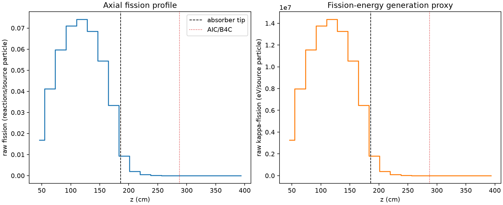
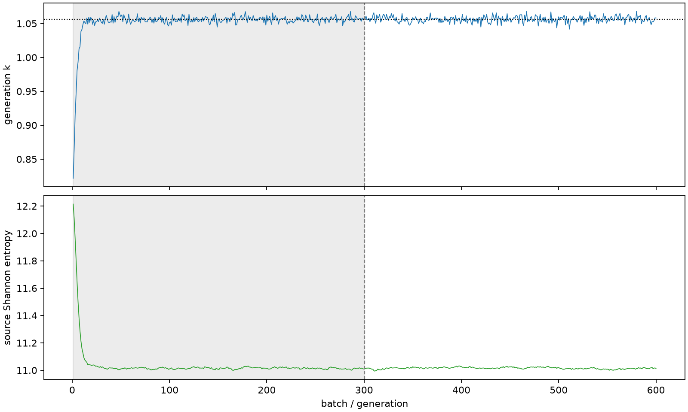

| field | value |
|---|---|
| experiment | V2-STAGE_128_OGRENCI_01-0018 |
| k | 1.0562045928627117 |
| MC standard error | 0.00017864791578911334 |
| seconds | 1015.919740983998 |
| acceptance | not_assessed |
| convergence | review_required |
Completed is output integrity only; physical and statistical review required. Zero tallies do not prove zero production or zero uncertainty.
| diagnostic | value |
|---|---|
| geometric fuel voxels | 5280 |
| zero fission tally voxels | 1016 |
| low signal fuel voxels | 2103 |
| low signal fission share | 8.863616717511747e-05 |
| low signal kappa share | 8.867268669329788e-05 |
| important fission share | 0.9500820987656534 |
| previous filter included | 3177 |
| duration estimate s | 1562.5173488400023 |
| actual minus estimate s | -546.5976078560043 |
| fission relative MC error | statistics |
|---|---|
| all_geometric_fuel | {"voxels": 5280, "positive_mean_voxels": 4264, "zero_mean_voxels": 1016, "undefined_relative_error_voxels": 1016, "median": 0.014283335971250751, "p95": 0.9999999999999998, "maximum": 1.0000000000000002} |
| low_signal | {"voxels": 2103, "positive_mean_voxels": 1087, "zero_mean_voxels": 1016, "undefined_relative_error_voxels": 1016, "median": 0.601139385251802, "p95": 1.0, "maximum": 1.0000000000000002} |
| important_95pct | {"voxels": 1958, "positive_mean_voxels": 1958, "zero_mean_voxels": 0, "undefined_relative_error_voxels": 0, "median": 0.006325195938112802, "p95": 0.010711339465649884, "maximum": 0.01241797005687127} |
| outside_previous_filter | {"voxels": 2103, "positive_mean_voxels": 1087, "zero_mean_voxels": 1016, "undefined_relative_error_voxels": 1016, "median": 0.601139385251802, "p95": 1.0, "maximum": 1.0000000000000002} |
| kappa_fission relative MC error | statistics |
|---|---|
| all_geometric_fuel | {"voxels": 5280, "positive_mean_voxels": 4264, "zero_mean_voxels": 1016, "undefined_relative_error_voxels": 1016, "median": 0.014262640302351283, "p95": 0.9999999999999998, "maximum": 1.0000000000000002} |
| low_signal | {"voxels": 2103, "positive_mean_voxels": 1087, "zero_mean_voxels": 1016, "undefined_relative_error_voxels": 1016, "median": 0.6004774929955937, "p95": 1.0, "maximum": 1.0000000000000002} |
| important_95pct | {"voxels": 1958, "positive_mean_voxels": 1958, "zero_mean_voxels": 0, "undefined_relative_error_voxels": 0, "median": 0.006316907571621884, "p95": 0.010696637908450242, "maximum": 0.01240242078197166} |
| outside_previous_filter | {"voxels": 2103, "positive_mean_voxels": 1087, "zero_mean_voxels": 1016, "undefined_relative_error_voxels": 1016, "median": 0.6004774929955937, "p95": 1.0, "maximum": 1.0000000000000002} |
| axial bin | fission share | kappa-fission share |
|---|---|---|
| 1 | 0.03905677002329047 | 0.03905850233143388 |
| 2 | 0.09551523720151317 | 0.09551412800668323 |
| 3 | 0.1386192869593334 | 0.13861766950538407 |
| 4 | 0.16487542991421403 | 0.1648735183664325 |
| 5 | 0.17193240522066325 | 0.17193067889389427 |
| 6 | 0.1588184674648397 | 0.15881685147221017 |
| 7 | 0.12620176610440048 | 0.12620016674931792 |
| 8 | 0.07741824068699993 | 0.07741759200435432 |
| 9 | 0.02146345336470358 | 0.02146934469977755 |
| 10 | 0.004629363024908575 | 0.004631331067417262 |
| 11 | 0.0011179636690536623 | 0.0011184447744968132 |
| 12 | 0.0002619332228303214 | 0.00026205083080461754 |
| 13 | 6.881159205172221e-05 | 6.884166263058944e-05 |
| 14 | 1.5885616875879894e-05 | 1.5891279070235078e-05 |
| 15 | 3.827164509543953e-06 | 3.829410064497693e-06 |
| 16 | 7.198688036833648e-07 | 7.197633559347666e-07 |
| 17 | 3.292755091487863e-07 | 3.294274202239596e-07 |
| 18 | 1.0962549946864406e-07 | 1.0975525211820749e-07 |
| 19 | 0.0 | 0.0 |
| 20 | 0.0 | 0.0 |
Histories include the inactive-to-active transition at batch 300. kappa-fission approximates fission energy production, not total heat deposition.

